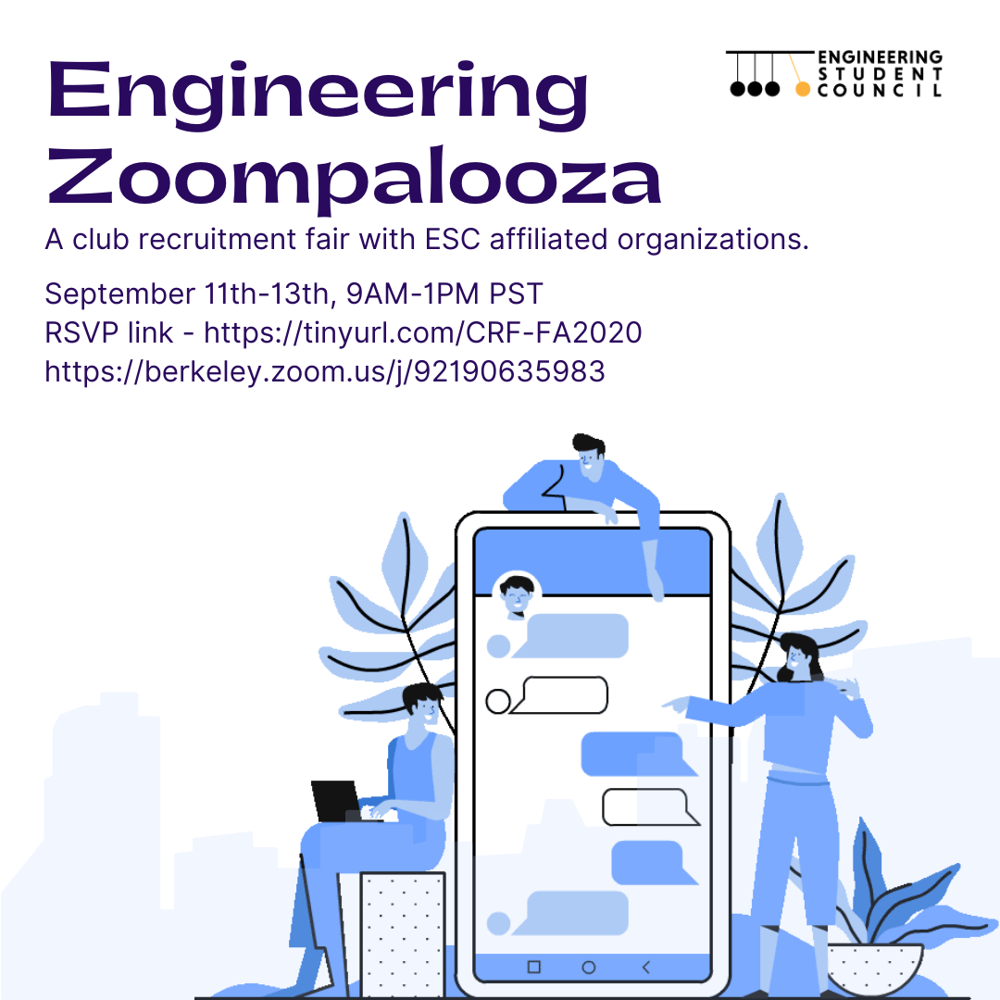

s the fall semester commenced online, we, the Engineering Student Council took on the responsibility of ensuring that our students would still be able to participate in STEM clubs on campus. As our students are scattered around the world we looked for a way to ensure that everyone had an opportunity to meet with clubs and join whichever sparked their interests. We decided together that we would create “Zoomapalooza”, where clubs would be given a platform to showcase their organization and recruit new students via Zoom. This College of Engineering wide event was hosted on September 11th, 12th, and 13th from 9:00 am-1:00 pm PST. We welcomed 40 clubs and 150 students to our first Zoomapalooza where organizations were given 20 minutes to showcase their club’s objective and social dynamic and answer questions that prospective students may have. The ESC’s Engineering Zoomapalooza was different because all of the clubs we were showcasing are ESC affiliated - this means they have made a commitment to promoting equity and inclusion, safety, integrity, engagement, and transparency in their organizations. Our ESC volunteers were able to ensure smooth transitions and take care of any and all technical issues that may have happened during the event. Zoomapalooza was able to connect prospective students with clubs looking to recruit as well as opening the lines of social communication with students through organizations and aiding in cultivating the social atmosphere that Cal brings in person.